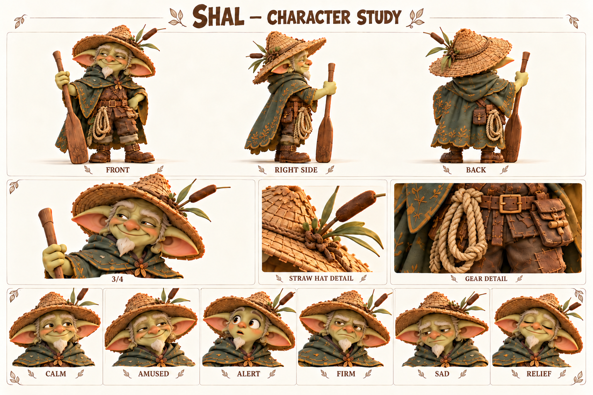

Чего хочет
Чтобы каждый переход через реку заканчивался возвращением на твёрдую землю.
Не спорит с течением, но должен научиться вовремя говорить людям о том, что заметил.
Старший гоблин-паромщик, знаток местных переправ и давний знакомый Корня.

Соломенная шляпа; узкая седая бородка; зелёный плащ; верёвка; весло.
Палитра: Солома / лесной зелёный / охра.
Шал много лет переводит жителей и грузы через реку. Его знание состоит из повторений: где вода темнеет после дождя, когда меняется натяжение верёвки, какой звук издаёт пустое весло о настил. Он уважает реку не как загадочную волю, а как силу, которую полезно наблюдать каждый день. Шляпа, плащ и верёвка у него потёрты работой, а не приключенческой позой.
Однажды после непогоды Шал отложил привычную переправу и повёл людей длинным сухим обходом. Все благополучно добрались, но он долго вспоминал недовольство тех, кому не объяснил причину задержки. Ему казалось, что достаточно сказать «сегодня нельзя». С тех пор он старается показывать видимый знак, хотя порой всё ещё ждёт, что окружающие сами заметят очевидное для него.
В будущей речной истории Шал может помочь понять, где прекращается действие воды и как безопасно подойти к берегу. Он не знает заранее всей природы превращения и не обесценивает поступок Бума фразой «я же говорил». Его собственная задача — объяснить вовремя и принять помощь на знакомой переправе, когда привычный порядок перестаёт работать.
Чтобы каждый переход через реку заканчивался возвращением на твёрдую землю.
Делиться наблюдениями прямо, а не заменять объяснение авторитетом и молчанием.
Пропустить изменение знакомой реки из-за самоуверенности.
Иногда слишком долго наблюдает и не сообщает остальным, что его тревожит.
Выдержка, знание местности, практические навыки и отсутствие показной храбрости.
Неподвижный на вид человек всё время следит за переменами.
Темп и ритм. Медленный, но ясный. Пауза нужна для наблюдения, не для таинственности.
Слова и построение фразы. Берег, держи, течение, сейчас, подождём. Конкретные знаки вместо пророчеств.
Юмор. Сухое короткое замечание после суеты окружающих.
Под давлением. Переходит на точные команды с именем адресата.
Как проявляет заботу. Объясняет следующий безопасный шаг и остаётся последним у края.
Чего избегать. Не говорить загадками в каждой реплике, не предсказывать всё и не читать мораль после спасения.
| Ситуация | Реплика или действие |
|---|---|
| Наблюдение | Верёвка натянулась иначе. Подождём и посмотрим. |
| Указание | Тиш, на сухую доску. Бум, держи этот конец. |
| Объяснение | Не потому, что я старше. Видишь, вода закрыла нижнюю метку? |
| С Уной | Да. Вчера под мостком звучало тише. |
| Юмор | Река спешит. Нам незачем. |
| Доверие | Я смотрю на воду. Ты посмотри на крепление. |
| Подпись на листе | Состояние | Актёрская задача |
|---|---|---|
| CALM | Покой | Расслабленные плечи, взгляд вдаль. |
| AMUSED | Веселье | Небольшая улыбка одним уголком. |
| ALERT | Настороженность | Взгляд фиксируется, рука плотнее держит весло. |
| FIRM | Твёрдость | Прямой взгляд и короткий останавливающий жест. |
| SAD | Грусть | Голова чуть опущена, взгляд задерживается на знакомом месте. |
| RELIEF | Облегчение | Хват ослабевает, возвращается лёгкая улыбка. |
Движение: Сначала переставляет опору, затем переносит вес; проверяет узел большим пальцем. Весло служит инструментом, а не посохом волшебника.
| План | Что показывает |
|---|---|
| Общий план спереди | Силуэт, лицо, одежда, положение ступней; без потери главных признаков. |
| Боковой ракурс | Глубина фигуры, профиль лица, предметы на ремнях и посадка одежды. |
| Вид со спины | Причёска, крепления, рюкзак либо панцирь; признаки не зеркалятся. |
| Средний план в три четверти | Лицо вместе с характерным жестом и позой корпуса. |
| Крупные детали | Материал и узнаваемые предметы; особенности лица, уха, руки или панциря. |
| Шесть эмоциональных портретов | Взгляд, брови, рот и положение головы; у существ также усики, крылья и поза. |
Переправа с новым тяжёлым пассажиром, где знания Шала дополняются наблюдениями друзей.